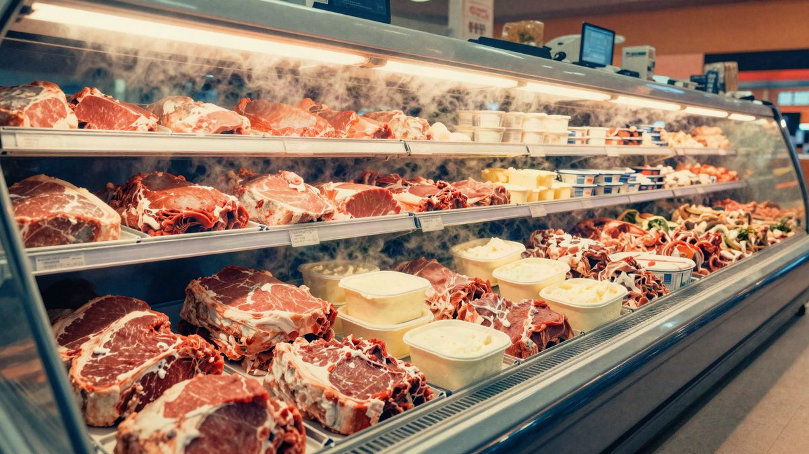

Hakeri u nekoliko europskih zemalja su pregrijali rashladne vitrine u supermarketima, hrana je završila u smeću

Kibernetički napad na umreženu rashladnu opremu pogodio je supermarkete u Belgiji, Nizozemskoj, Švedskoj i Luksemburgu. Napadači su na daljinu podigli temperaturu u hladnjacima na oko 50 °C, pa su trgovine morale baciti meso, mliječne proizvode i svježu hranu. Za napad za sada nitko nije preuzeo odgovornost.
Supermarketi u nekoliko europskih zemalja pogođeni su kibernetičkim napadom na rashladnu opremu spojenu na internet. Napadači su na daljinu podigli temperaturu u hladnjacima i zamrzivačima na oko 50 °C, zbog čega se hrana odmrzla i više se nije smjela prodavati. Problemi su prijavljeni u Belgiji, Nizozemskoj, Švedskoj i Luksemburgu, a prema pojedinim izvješćima i u Estoniji, Finskoj i Irskoj.
Pogođeni su, među ostalima, lanci u sastavu nizozemske grupe Ahold Delhaize te švedski ICA i Coop. U Belgiji su zahvaćene trgovine Delhaize, Carrefour i Spar. Lokalni servis za rashladnu opremu procjenjuje da je upadom pogođeno najmanje 20 rashladnih sustava. Napad je navodno počeo oko ponoći u nedjelju, a mnoge su trgovine porast temperature primijetile tek nekoliko sati kasnije.
Kako je napad izveden
Napadači su, čini se, iskoristili ranjivost u umreženim rashladnim uređajima i na daljinu uključili način rada za odleđivanje. Taj način rada inače se koristi samo kratko, da bi se s isparivača uklonio led. Kad ga napadač drži uključenim, uređaj zaobilazi uobičajenu regulaciju temperature i prostor se brzo zagrijava.
Belgijska tvrtka za rashladne usluge Sabcobel kaže da se napad poklapa s onim koji je prije nekoliko tjedana pogodio Francusku. Direktor Stefan Morans dodaje da Sabcobel već tjednima uvodi zaštitu na opremi klijenata. Dio sigurnosnih popravaka ipak zahtijeva fizičku preinaku hardwarea na licu mjesta. Nakon francuskog incidenta mnogi su supermarketi opremu premjestili u sigurnije mreže, no novi napad pokazuje da je ranjivost vjerojatno još široko prisutna u opremi koju koristi europska trgovina.
Posljedice u trgovinama
U pogođenim trgovinama izgubljeni su meso, mliječni proizvodi i svježa hrana. U Švedskoj su zaposlenici morali žurno ukloniti i baciti pogođenu robu kako bi se izbjegao rizik za sigurnost hrane. Neke su trgovine kupce obavijestile preko društvenih mreža, a jedna u Stockholmu istaknula je obavijest da se zamrzivači ne mogu koristiti zbog kibernetičkog napada.
Delhaize je potvrdio da su rashladni sustavi u dijelu trgovina pogođeni IT incidentom i da je poduzeo mjere za nastavak rada. Carrefour Belgija kaže da je utjecaj ograničen, no potvrdio je da je riječ o kibernetičkom napadu. Belgijski centar za kibernetičku sigurnost potvrdio je da prati situaciju.
Za napad za sada nitko nije preuzeo odgovornost, a nadležne službe u europskim zemljama još nisu utvrdile tko stoji iza njega. Slučaj ponovno otvara pitanje sigurnosti IoT uređaja. Rashladna oprema koja je nekad radila isključivo mehanički sve se češće spaja na internet radi daljinskog nadzora i upravljanja, a to napadačima daje novu metu.
Izvor: cnBeta